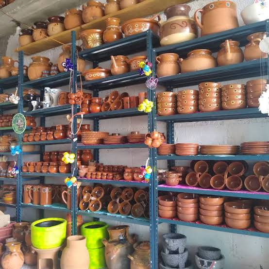

"Las Gaviotas"
Es una empresa de venta de materiales de barro
Misión:
Ofrecer a nuestros clientes productos de barro
de la más alta calidad, resaltando la artesanía local y
promoviendo el valor cultural de cada pieza, brindando
así una experiencia auténtica y única.
Visión:
Ser reconocidos como el principal destino para aquellos
que buscan productos de barro excepcionales, siendo líderes
en la preservación y promoción de la artesanía local,
contribuyendo al desarrollo sostenible de la comunidad
y fomentando el aprecio por la riqueza cultural de
nuestras tradiciones.
Valores
Creativos
Con iniciativa
Innovadores
Activos
Motivados
Planificadores
